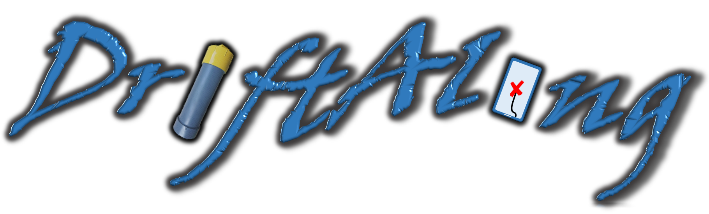
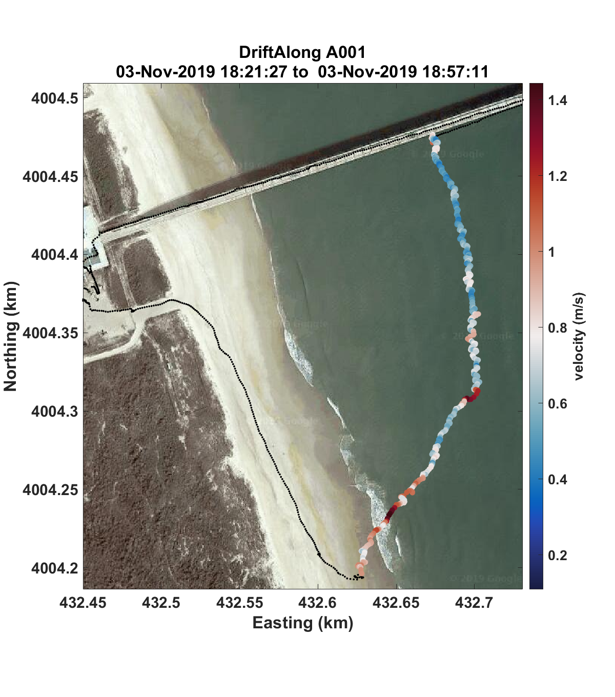
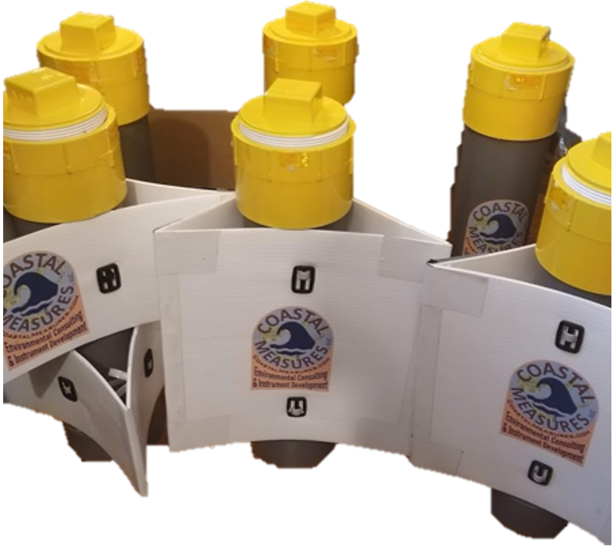
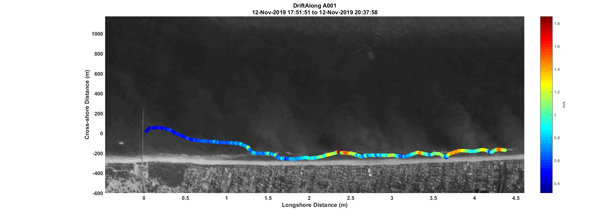
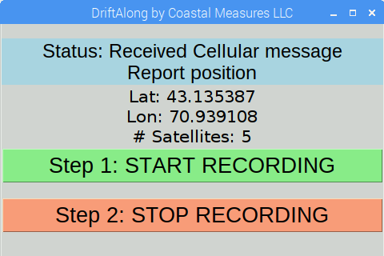

Products
DriftAlong is a small passive drifter for individual or swarm deployments in coastal or inland waters. A minimalist approach was used in design to remove superfluous features while reducing production costs. Collections may be begun or ended via a GUI on a small touch screen on the instrument, or remotely from a computer or smartphone. An online dashboard allows users to communicate with DriftAlongs in mass to simplify 'swarm' deployments. Units start at $599 per unit without a remote connection and at $799 with a remote connection.

Turning a DriftAlong on before deploying.

Deployed during moderate wave conditions, this DriftAlong relatively quickly washed ashore due to stokes drift. Periods of high velocity mark when the DriftAlong was within breaking waves.

6 DriftAlongs were used for a study of current patterns in the Great Bay,NH conducted by the University of New Hampshire. They were also used to test the effectiveness of different setups of the stabilization fins.

This DriftAlong was deployed during a high wind and wave event. At first, waves and currents pushed the sensor landward. Once within the trough between the sanbar and the coastline, a strong current rapidly moved the DriftAlong several miles down the coast where it was recovered.

The status of a DriftAlong may be modified by a small touchscreen interface on the instruments, or wirelessly and in bulk from an online dashboard that passes messages via a cellular network

A computer interface may be used to wirelessly transfer data between DriftAlongs and any computer, immediately display the geographic data over satellite imagery, and save the data to a new file format.
Please contact us to learn more.